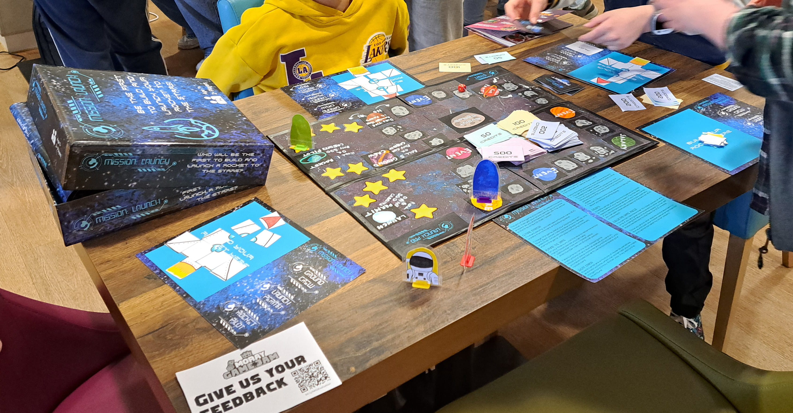
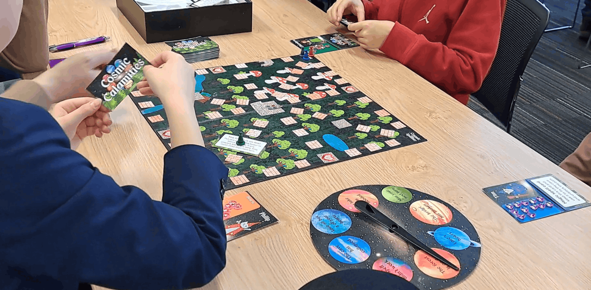
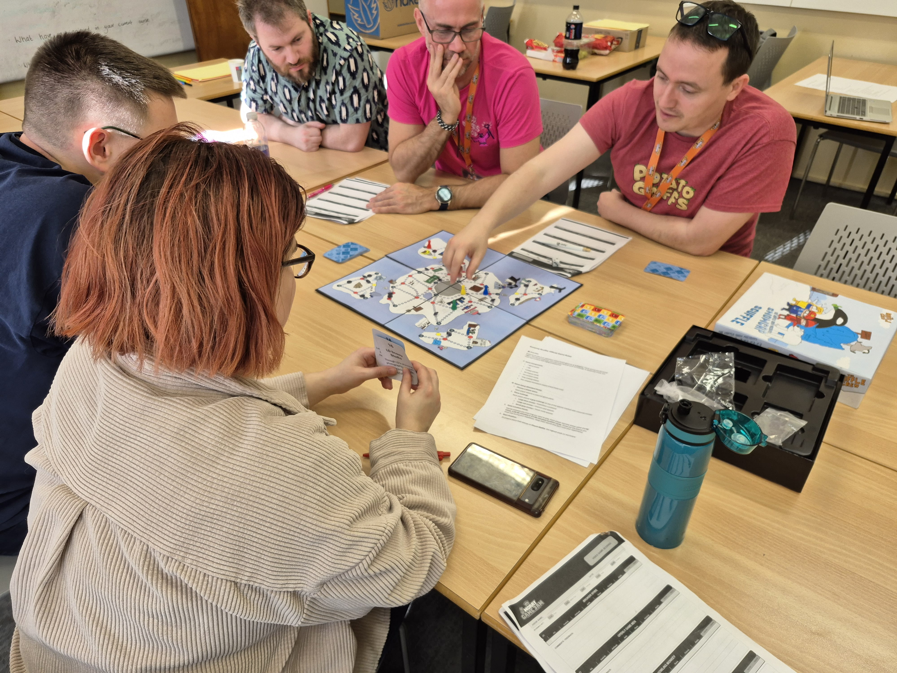

Jam Stories
From Player to Creator: My Moray Game Jam Journey
By Laura Dee | The Waffle Crew

For my family, games have always been something we enjoy together. Whether it's gathering around a board game or exploring the virtual worlds of video games, they've been a shared interest for many years. What we never expected was that this hobby would eventually lead us to designing award-winning board games of our own.
How We Became Involved in the Moray Game Jam
My first introduction to the Moray Game Jam came in 2019, when I attended one of the event's industry talks with my son Michael and daughter Lily. We listened to a presentation on video game art styles delivered by an artist from Hunted Cow Studios, and it opened our eyes to the creativity and opportunities within the games industry. Michael, who has a keen interest in digital art and game development, left feeling especially inspired.
A few years later, Lily and her friend Kirsten were encouraged by their lecturer Andrew French to participate in the Moray Game Jam as part of their UHI Moray Foundation Apprenticeship in Creative & Digital Media. As both were under 18 at the time, they needed a responsible adult on the team. Knowing my love of board games and design, they invited me to join them. That team became The Waffle Crew.
Since then, we've competed every year, welcoming new members along the way, including Kirsten's brother Aidan for the 2025 jam, and Michael joining the team from 2026. What began as an opportunity to support young creatives has grown into a shared family project that we look forward to every spring. Along the way, we've been fortunate enough to win the People's Choice Award in the Board Game category twice, in 2024 and 2026.
How Our Games Have Evolved
One of the most rewarding aspects of the Moray Game Jam is starting with a theme and transforming it into a fully playable game over a single weekend.
Mission: Launch (2024)

Our first game, Mission: Launch, was inspired by the 2024 theme, "Up, Up and Away!". As complete beginners to game design, we wanted to create something accessible and family-friendly that people of all ages could enjoy.
Players raced around the board gathering the components needed to build a rocket, managing credits and overcoming unexpected events before securing a pilot, crew and launch permit in a race to the launch pad. The game focused on strategy, resource management and a healthy dose of luck.
Creating Mission: Launch taught us the fundamentals of game design, rapid prototyping and teamwork under pressure. More importantly, it showed us how satisfying it is to see complete strangers sit down and enjoy a game you've created yourself.
Cosmic Calamities (2025)

Armed with feedback from the judges and visitors, and practical advice from other participants, we approached the following year's competition with much greater confidence.
The 2025 theme, "When the planets align... anything can happen", inspired Cosmic Calamities, a fantasy survival game set in the magical world of Enchantria. Players took on the role of powerful magicians attempting to survive a series of cosmic disasters while managing resources, collecting spell cards and outlasting their opponents.
Compared with our first game, Cosmic Calamities featured more sophisticated mechanics, greater strategic depth and a stronger focus on balancing gameplay. It reflected how much we had learned in just twelve months and demonstrated the value of constructive feedback and continuous improvement.
Snowcap Scuffle (2026)

By our third appearance, we had developed a clearer design process and a better understanding of each team member's strengths. The 2026 theme, "Snow and Ice", became Snowcap Scuffle, an expedition-themed board game where players navigate a frozen landscape to reach secret destinations while overcoming hazards such as icebergs, storms and unpredictable event cards.
This project also marked our transition from hand-painted boards and components to a fully digital visual style. Michael's distinctive digital artwork allowed us to produce assets more quickly, make changes during playtesting and create what was undoubtedly our most polished game to date.
The move to digital production freed up more time for refining gameplay and testing ideas, helping us create a more balanced and engaging experience while still retaining the creativity that defines our team's approach. The result was another People's Choice Award and some fantastic feedback from players and judges alike.
"My favourite of our games so far is Snowcap Scuffle. I really enjoyed having my brother on the team, as he was able to create all the artwork, which meant the rest of us could spend more time developing and refining the game mechanics. Mum, Kirsten and I put a lot of thought into how the game would work, and I think that helped make it our most well-designed game yet. I also loved the theme and all the different mechanics we included, as they gave players lots of choices and made every game feel different. It was really rewarding to see people enjoying something we had worked so hard to create together." Lily Dee, The Waffle Crew.
Using My New Skills Beyond the Game Jam
While the Moray Game Jam is an enjoyable creative challenge, the skills developed through the event reach far beyond game design. Professionally, I work in the Higher Education sector and lead digital marketing activities as part of my role. The creative confidence gained through developing board games has strengthened my design skills, helping me to approach marketing projects with greater creativity and confidence.
As a qualified Project Manager, the Game Jam has also allowed me to put planning, organisation and team management skills into practice in a very different setting. Delivering a complete game in a single weekend requires clear scheduling, delegation and problem-solving, particularly when working within the time constraints of a competitive event.
One of the most significant outcomes has been applying these skills to develop a board game for my workplace. Designed as a training and induction resource, the project has allowed me to explore more advanced game mechanics and demonstrated how game-based learning can be used in professional environments. Without the experience and confidence gained through the Moray Game Jam, I would never have considered taking on a project like that.
The Game Jam has also benefited the younger members of our team. Both Lily and Kirsten were able to use their experience as evidence of practical creative skills and teamworking within their Foundation Apprenticeships and university portfolios. Today, both are studying at Gray's School of Art in Aberdeen, while Michael has gained confidence in his artistic abilities through the positive feedback he has received from industry professionals and fellow competitors. A special shout out to the Code Wizards for their encouragement!
"I've always been interested in video games and animation, so taking part in the Game Jam was a great experience. I got to use the creative skills I've developed through subjects like Digital Art, Photography and Music Technology to help create our game. Because we only had a weekend to make it, I also learned a lot about teamwork, communication and working to tight deadlines. Seeing people enjoy a game that we'd created ourselves was really rewarding, and getting such great feedback on my artwork, especially from the Code Wizards team, gave me a real confidence boost. It's made me even more excited to study at UHI Moray next year." Michael Dee, The Waffle Crew.
More Than Just Making Games
Although game creation sits at the heart of the event, the Moray Game Jam offers much more than competition alone.
One of the highlights each year is the opportunity to meet professionals working within the games industry. Whether through talks, judging sessions or informal conversations, participants gain valuable insights into careers, creative processes and industry trends. For young people considering a future in the creative industries and gaming sector – and as a parent helping young people to navigate their way towards this goal – these interactions are invaluable.
The social side of the event is equally important. Activities such as the quiz, pizza night and Gaming Playground create opportunities to meet other participants, share ideas and celebrate everyone's achievements. The Gaming Playground is particularly rewarding, as members of the public can play every game and vote for their favourites. Watching children, parents and grandparents enjoy something you've created is an experience that never gets old.
Most importantly, the atmosphere is incredibly welcoming. As a team that started with little experience of game development, we found the judges, staff, industry professionals and fellow competitors to be supportive, encouraging and generous with their advice. That sense of community is one of the reasons we keep coming back year after year.
"The Moray Game Jam is different from other creative projects I've worked on because we go into it completely blind. Until the theme is revealed, there's no way to plan ahead, which makes it exciting and a real test of creativity. At university, I usually have several weeks or even months to develop a project, whereas the Game Jam’s 48 hours from theme reveal to judging pushes us to think quickly, make decisions confidently and manage our time effectively. I also really enjoy is the teamwork aspect. Most of my creative work is completed independently, but the Game Jam gives me the chance to collaborate with others, share ideas and build on the team's strengths. Working together often leads to ideas that are far better than anything one person could create alone. It's helped me develop so many valuable skills, from communication and problem-solving to teamwork and time management, which benefit me beyond the competition." Kirsten Wallach, The Waffle Crew.
Looking Ahead
What began with attending a single industry talk has turned into a creative family tradition. Through the Moray Game Jam, we've developed skills in design, project management, teamwork, problem-solving and creative thinking, while making friends and creating games that we're genuinely proud of.
Most importantly, each year we leave inspired to learn more, improve our ideas and start thinking about the next challenge. We're already looking forward to seeing where the 2027 theme takes The Waffle Crew.
If I could give any advice to aspiring creators thinking about signing up for the Moray Game Jam, it would simply be: Go for it!